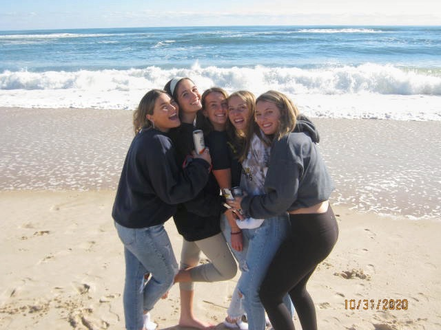

These are nachos I got a few years ago from a vegan restaurant in LA! Nachos are a must.
Vegan tuna salad made from chickpeas! This one from Alt Eats was so good I started making my own!
The Lunch Room/Detroit Street Filling Station is one of my favorite restaurants in Ann Arbor, I love this taco salad!
Noodle stir fry's are my favorite! So customizable and super quick!
Going vegan made me discover how much I love mushrooms... I can't get enough of this stuffed mushroom dish.
Tacos are an amazing option as they are so customizable.
Wagamama (based mostly in Europe), has always been one of my favorite restuarants growing up. They now have several vegan dishes including this one which has a vegan egg!
I love making my own vegan chicken nuggets using tofu, breadcrumbs and lots of seasonings!
I'm from New Jersey and an avid bagel lover. This is my go-to, whole wheat sesame seed bagel toasted with hummus, spinach and hashbrown!